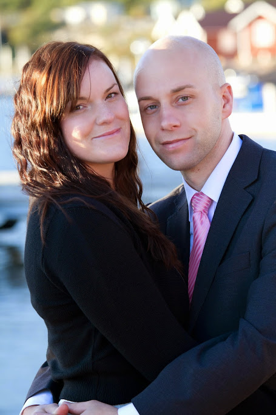

Anne-Lii Gesar Hansen

En bild på mig och min man Kim
Hej
Jag är en "tjej" som är 38 år ung. Jag bor på Visingsö (den lilla ön längst ner i sjön Vättern)
tillsammans med min man Kim och våra två söner: Oliver 5 år och William 3 år.
Dessa tre killar är verkligen hela mitt liv!!!
Utöver att umgås med familj och vänner så tycker jag om att
promenera, träna, paddla kajak, åka på SPA, spela dataspel och måla/rita. Sen har jag nästan aldrig tid
till
något av det.
Det är framförallt för att jag har jobbat 100%, pendlat 3 timmar per dag och har småbarn.
Men nu när jag studerar så har jag "vunnit" 3 timmar per dag.
Så nu har jag börjar träna regelbundet, promenerar mera och umgås mer med min familj
Jag gick på MediaGymnasiet i Nacka Strand och då lärde jag mig lite om HTML och CSS.
Men det är så längesedan så jag får nog säga att jag är helt nybörjare.